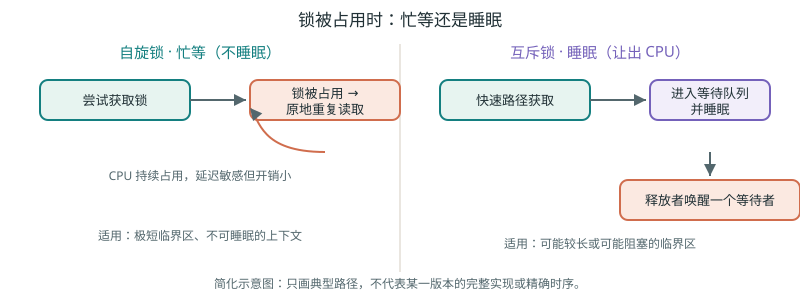

并发程序的难点往往不在单条指令，而在多个执行流对共享状态的交错访问。即使每个线程单独看都“按顺序执行”，不同线程之间的读写顺序也可能改变程序结果；编译器和 CPU 还会在语言与硬件内存模型允许的范围内重排操作。
本章从竞态条件与数据竞争的区别出发，解释自旋锁、互斥锁、信号量和 RCU 各自保护什么、付出什么代价，并用锁顺序与 lockdep 讨论死锁。请把示例视为最小并发模型：真实正确性还依赖语言内存模型、原子操作、锁的作用域和具体内核 API。
并发问题的根源
三个关键概念，是理解并发问题的基石：
竞态条件（Race Condition）
当程序的输出结果依赖于多个执行流的相对时序时，就存在竞态条件。经典例子——两个线程同时执行 counter++。看起来是一行代码，但编译后是三条指令：load counter到寄存器、寄存器加1、store回内存。如果两个线程的load和store交错执行，结果可能只增加了1而不是2。
临界区（Critical Section）
访问共享资源的那段代码区域。临界区的设计原则是：尽量小、尽量短。在临界区里待的时间越长，其他等待的线程阻塞的时间就越久，系统的并发度就越低。
数据竞争（Data Race）
两个或以上的线程同时访问同一块内存，且至少有一个是写操作，且没有任何同步机制保护——这就是数据竞争。C++标准明确表示数据竞争是"未定义行为"（Undefined Behavior），编译器可以生成任何代码——包括你完全想不到的"优化"。
// 经典的数据竞争例子
int counter = 0;
// 线程A // 线程B
counter++; counter++;
// 预期结果: counter = 2
// 实际可能结果: counter = 1 !!!
// 因为两个线程的 load-add-store 可能交错：
// A load (counter=0) → B load (counter=0) → A add → A store (1) → B add → B store (1)现实案例：不要把 Mars Climate Orbiter 事故归因于竞态条件：公开调查指出，英制与公制单位混用导致导航数据错误。它说明接口契约与单位约定必须明确，但不是数据竞争案例。真实内核数据竞争应以具体 CVE、补丁或上游提交为证；没有可核对的一手来源时，不应给出影响范围或攻击后果等具体断言。并发Bug不是学术问题，是真能炸掉服务器甚至航天器的。
自旋锁 vs 互斥锁
这两种锁的实现哲学完全不同，理解它们的差异对于写出高性能的并发代码至关重要。

自旋锁（spinlock）
自旋锁的核心行为：如果锁被占用，当前执行上下文会忙等待，直到锁被释放。它不会主动睡眠，但这不等于任何 spinlock 都能在任何中断上下文中安全使用。必须按共享数据是否也会被硬中断/软中断访问选择合适的 irq/irqsave 变体；在 PREEMPT_RT 内核中，普通 spinlock_t 的语义会变化，真正需要硬中断原子语义的核心路径使用 raw_spinlock_t。具体规则以目标内核的 locking 文档为准。
实现边界：不要自行复制或编写内核自旋锁的 inline assembly。Linux 的锁实现会随架构、配置和 PREEMPT_RT 改变，并包含内存序、调试与队列锁等细节。内核代码应使用 spin_lock()、spin_unlock() 等接口，并遵守上下文规则。
Linux内核还引入了更高效的 qspinlock（队列自旋锁），它维护一个等待队列，每个自旋的CPU在不同的cache line上旋转，避免了多核同时自旋同一地址导致的cache一致性风暴。
互斥锁（mutex）
互斥锁在锁被占用时会让当前线程睡眠（调用schedule()让出CPU），然后被放入等待队列。当锁释放时，内核会唤醒等待队列中的线程。这涉及两次上下文切换（一次睡眠、一次唤醒），开销远大于自旋锁。但互斥锁不浪费CPU时间。
| 维度 | 自旋锁 | 互斥锁 |
|---|---|---|
| 等待方式 | 忙等待（spin） | 睡眠等待（schedule） |
| CPU占用 | 高（自旋时CPU全速运转） | 低（睡眠时CPU可干别的） |
| 持有时间 | 尽可能短；无通用微秒阈值 | 可长可短 |
| 中断上下文 | 可用 | 不可用（会触发BUG） |
| 切换开销 | 无 | 可能睡眠/唤醒；开销依实现和争用而变 |
| 适用场景 | 临界区极短 | 临界区较长或可能阻塞 |
调优经验：一个经验法则是——如果临界区的执行时间小于两次上下文切换的时间（通常为1-5微秒），用自旋锁更好。如果你不确定，从互斥锁开始，用perf测量锁争用情况，再决定是否换用自旋锁。千万别一开始就选自旋锁——它容易引入隐蔽的性能问题。
机制追踪：一次争用中的 mutex_lock() 从快速路径到睡眠唤醒经历了什么？
“锁住”只是结果。把一次有竞争的获取拆开，能看到它为什么在无竞争时几乎不花代价，而在竞争时把成本转成“睡眠—唤醒”。
- 快速路径先试一次：用原子操作（如比较并交换）尝试把锁字从空闲改为已占用；无人竞争时这一条原子指令就拿到锁，不进入内核。
- 乐观自旋再等一下：发现已加锁但持有者可能正在别的 CPU 上运行，实现可能短暂自旋，期望锁马上释放，避免立即睡眠的上下文切换开销。
- 进入慢路径睡眠：仍拿不到时，任务被挂到该锁的等待队列上，状态改为可中断/不可中断睡眠并调用调度器让出 CPU——这是与自旋锁最本质的区别。
- 释放者负责唤醒：
unlock把锁字置空闲并唤醒等待队列中的一个任务；被唤醒者通常需要重新参与竞争，不保证“先到先得”。 - 用户态 mutex 落到 futex：pthread 互斥锁的无竞争路径完全在用户态完成，只有确需休眠或唤醒时才通过
futex()系统调用进入内核。
自旋锁为什么不能这样“睡眠”，qspinlock 又改了什么？
在硬中断等不可睡眠上下文里不能调用调度器，所以只能忙等；因此要按共享数据是否也会被中断访问选择 irq/irqsave 变体。qspinlock 把锁字与等待队列编码在一起，让各 CPU 在不同的 cache line 上自旋，减少多核同时读同一地址造成的缓存一致性压力。PREEMPT_RT 下普通 spinlock_t 的语义会变化，以目标内核的 locking 文档为准。
信号量与PV操作
信号量（Semaphore）是Dijkstra在1965年提出的经典同步原语。它本质上是一个整型计数器 + 两个原子操作：P（proberen，荷兰语的"测试"，减少计数器，如果为负则阻塞）和V（verhogen，"增加"，增加计数器，唤醒阻塞的线程）。
如果你把信号量理解为"资源的数量"，就很好理解了：P操作是"申请一个资源"（资源数-1），V操作是"归还一个资源"（资源数+1）。当资源数为0时，申请者必须等待。
信号量可以解决几乎所有经典的同步问题。我们来看三个最经典的：
生产者-消费者问题
// 生产者-消费者：使用三个信号量
sem_t empty; // 缓冲区中空位数量，初始 = N
sem_t full; // 缓冲区中满位数量，初始 = 0
sem_t mutex; // 互斥访问缓冲区，初始 = 1
// 生产者
void producer() {
while (1) {
item = produce();
P(&empty); // 等空位
P(&mutex); // 锁缓冲区
buffer[in] = item;
in = (in + 1) % N;
V(&mutex); // 解锁缓冲区
V(&full); // 增加满位
}
}
// 消费者
void consumer() {
while (1) {
P(&full); // 等满位
P(&mutex); // 锁缓冲区
item = buffer[out];
out = (out + 1) % N;
V(&mutex); // 解锁缓冲区
V(&empty); // 增加空位
consume(item);
}
}哲学家就餐与读者-写者
哲学家就餐问题的核心挑战：五个哲学家（线程）围坐一桌，每两人之间有一根筷子（共享资源）。哲学家需要同时拿起左右两根筷子才能吃饭。最朴素的实现（先拿左边再拿右边）会导致死锁——所有人都拿了左筷子等右筷子。解决方案包括：限制同时就餐人数、使用奇数位拿法（左边的先拿右）、或者用管程（Monitor）封装叉子的获取。
读者-写者问题：多个读者可以同时读共享数据，但写者需要独占访问。解决方案有"读者优先"和"写者优先"两种策略——前者可能导致写者饥饿，后者读者饥饿。现实中多数系统采用"写者优先"变体，因为写者通常持有最新的数据。
经典的力量：这三个问题（生产者-消费者、哲学家就餐、读者-写者）不是学术游戏——它们就是你在实际系统中每天遇到问题的抽象化。你在写一个消息队列（生产者-消费者）、数据库事务（读者-写者）、资源分配（哲学家就餐）时，本质上就是在解决这些经典问题的变体。
RCU：读多写少的终极武器
到目前为止讨论的所有同步机制都有一个共同点：读操作也需要加锁。但在某些场景下，读操作的频率远高于写操作（比如路由表查找、文件系统inode缓存、网络连接跟踪），加锁的开销在整体性能中占比极大。RCU（Read-Copy-Update）正是为解决这种"读多写少"场景而生的。
RCU的核心思想
RCU的设计非常巧妙：读操作不需要任何锁，直接读取数据。写操作不是直接修改原数据，而是创建一个副本，在副本上修改，然后用一个原子的指针更新操作把新版本"发布"出去。旧版本不会立即释放——要等到所有正在读取旧版本的读者都完成之后才能释放。这个等待期叫做"宽限期"（Grace Period）。
// 简化的RCU模式示例
struct foo {
int key;
int data;
struct rcu_head rcu;
};
// 读者：完全无锁，极快
rcu_read_lock();
struct foo *p = rcu_dereference(g_foo);
int val = p->data; // 访问数据
rcu_read_unlock();
// 写者：创建副本，原子更新，延迟释放
struct foo *old = g_foo;
struct foo *new = kmalloc(sizeof(*new), GFP_KERNEL);
*new = *old; // 复制
new->data = new_value; // 修改
rcu_assign_pointer(g_foo, new); // 原子指针更新
// 此时新读者看到新版本，但旧读者还可能在看旧版本
// 等待所有旧读者退出RCU临界区后再释放旧版本
kfree_rcu(old, rcu); // kfree_rcu 自动等待宽限期注意：RCU不是万能药。它在写操作时涉及复制和延迟释放，内存开销大。且RCU要求保护的数据主要通过指针访问，不适合复杂的链表内操作。但在合适的场景下——路由表、文件系统的dentry cache、网络协议栈的连接跟踪——RCU能提供几乎无开销的读性能。
RCU 的适用边界：RCU 常用于读多写少、读侧需要低同步开销的数据结构，例如路由信息和部分目录项路径。它不是所有读多写少数据的通用替代品：读侧临界区类型、指针发布/解引用规则、对象回收宽限期及是否允许睡眠，都必须匹配所用 RCU flavor 与 API。
死锁的四个条件与lockdep
当你使用以上任何一种同步机制时，都有一个挥之不去的阴影——死锁（Deadlock）。死锁发生时，多个线程互相等待对方释放资源，所有线程都被卡住，系统完全丧失功能。
死锁的四个必要条件（Coffman条件）
| 条件 | 含义 | 示例 |
|---|---|---|
| 互斥（Mutual Exclusion） | 资源同时只能被一个线程持有 | 互斥锁的本质 |
| 持有并等待（Hold and Wait） | 线程已经持有一个资源，又在等待另一个资源 | 持有锁A，请求锁B |
| 不可抢占（No Preemption） | 线程持有的资源不能被强制剥夺 | 持有锁时不能被别人抢走 |
| 循环等待（Circular Wait） | 存在一个线程-资源的循环等待链 | T1等T2的锁，T2等T1的锁 |
破除死锁只需要破坏上述任意一个条件。实践中用得最多的是破坏"循环等待"——通过锁的有序获取（Lock Ordering），比如规定必须按A→B→C的顺序获取锁，就永远不会出现循环等待。
lockdep：内核中的死锁检测神器
Lockdep是Linux内核中一个非常巧妙的运行时锁依赖验证工具。它在内核代码每次获取和释放锁时，记录下锁的获取顺序，构建一个"锁类→锁类"的有向图。如果检测到任何循环依赖，lockdep会立即打印详细的死锁报告并触发内核警告。
# 如果你的内核开启了 CONFIG_PROVE_LOCKING=y
# lockdep 会自动运行。检测到死锁风险时你会看到类似这样的输出：
============================================
WARNING: possible circular locking dependency detected
6.8.0-40-generic #45 Not tainted
---------------------------------------------
kworker/0:1/27 is trying to acquire lock:
&sb->s_type->i_mutex_key#2 (inode->i_rwsem){++++}-{3:3}
but task is already holding lock:
&mm->mmap_lock (mmap_lock){++++}-{0:0}
which lock already depends on the new lock.
============================================
# 然后 lockdep 会打印出完整的锁依赖链，帮你定位问题Lockdep 根据运行时实际观察到的锁获取顺序建立依赖关系，并在新依赖可能形成循环时报告潜在死锁。它能在不复现完整并发时序的情况下发现部分问题，但覆盖范围受测试路径、锁类建模和配置影响；没有报告不等于证明所有未执行路径都无死锁。
最佳实践：在内核开发中，永远不要关闭lockdep（CONFIG_PROVE_LOCKING）。它会捕获大量潜在的同步问题。用户态也有类似工具——如TSan（ThreadSanitizer）和Helgrind（Valgrind的线程检测工具）。每次写多线程代码时，养成用这些工具跑一遍的习惯，可以避免90%以上的并发Bug。
同步与互斥是并发编程中最难、也最有魅力的部分。从原子指令到自旋锁、从信号量到RCU、从死锁分析到lockdep自动检测——每一层抽象都在帮你降低并发编程的心智负担。但记住，没有银弹。选择合适的同步原语需要你理解场景：读多写少用RCU、临界区段用自旋锁、临界区长用互斥锁、资源计数用信号量。
只读观察：用户态互斥锁何时落到 futex
环境：Linux 主机，普通用户权限；只用 strace 追踪自己启动的子进程，不修改系统配置。ptrace_scope 限制可能使追踪失败，此时按“未验证”处理。输出随内核、libc 与调度而变化。
strace -f -e trace=futex python3 - <<'PY'
import threading
lock = threading.Lock()
def worker():
for _ in range(2000):
with lock:
pass
threads = [threading.Thread(target=worker) for _ in range(4)]
[t.start() for t in threads]
[t.join() for t in threads]
PY预期：输出中出现若干 FUTEX_WAIT_PRIVATE 与 FUTEX_WAKE_PRIVATE（或非 PRIVATE 变体），而不是每次加锁都有系统调用；无竞争的锁几乎没有 futex 行。
解释：这正是“快速路径在用户态、慢路径才进内核”的体现：glibc 的互斥锁只在需要睡眠或唤醒时用 futex 请求内核介入。计数与时间不能当作固定基准。清理：均为只读追踪命令。
下一章，我们把视角从"CPU和并发"转向"内存的奥秘"——虚拟内存。为什么每个程序都以为自己在使用整个地址空间？从虚拟地址到物理地址的翻译过程是怎样的？TLB miss和page fault的开销到底有多大？大页为什么能显著提升性能？让我们一探究竟。